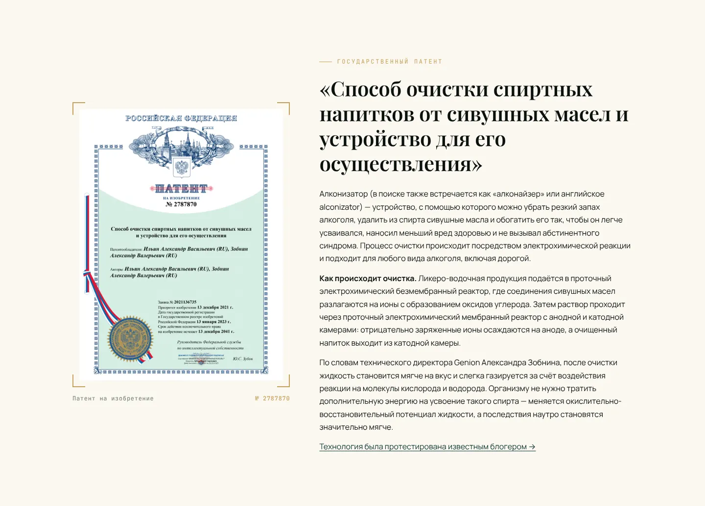
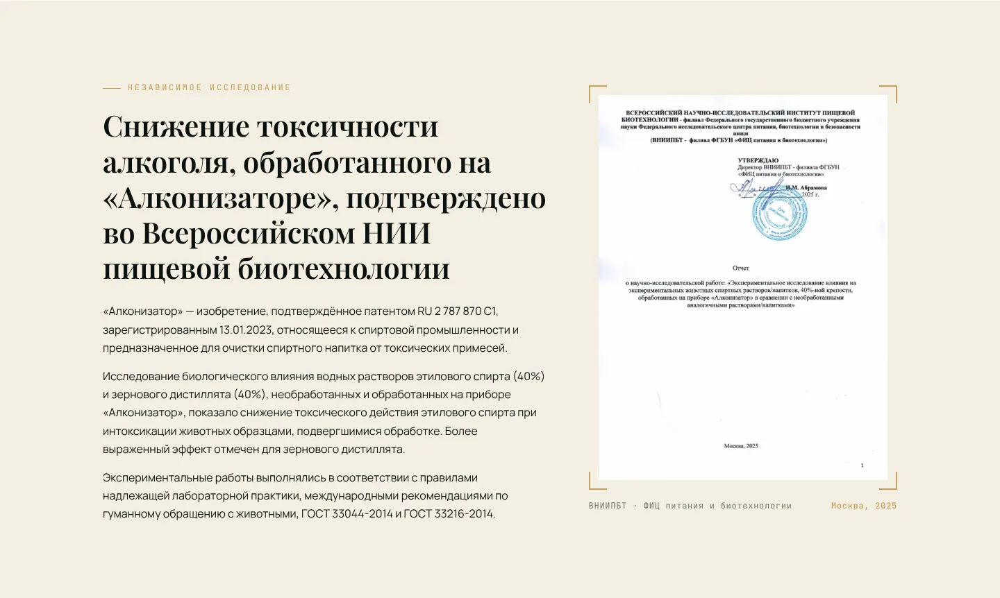
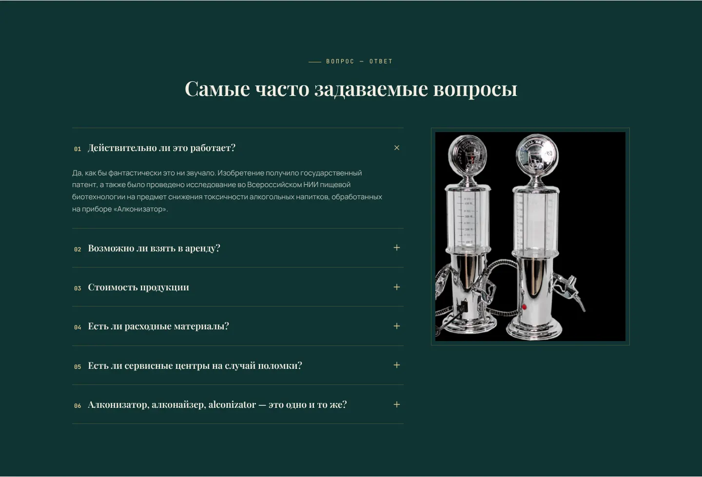
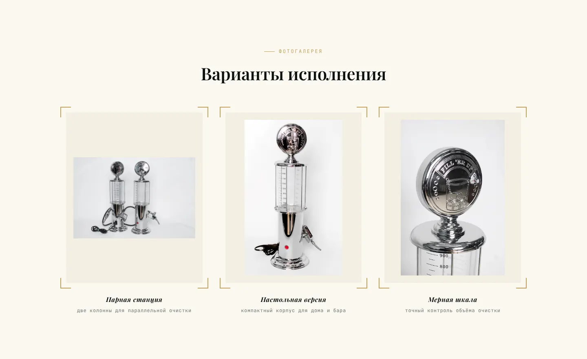

4 шагадоверия: как работает → патент → исследование НИИ → вопросы
1 действиев конце — написать или прийти на бесплатную проверку
Задача
Покупатели ищут устройство под разными названиями и не верят, что оно работает. Нужно, чтобы сайт находили по любому варианту и чтобы он убеждал тех, кто сомневается.
Ключевые решения
Структура по возражениямКак работает → патент → исследование НИИ → вопросы → доставка.
SEO под все варианты названияАлконизатор, алконайзер, alconizator, alconizer, genion.
FAQ под поисковые запросы«Алконизатор, алконайзер — это одно и то же?» — отвечает на то, что спрашивают в поиске.
Оффер «проверьте бесплатно»Приходите со своим алкоголем — это закрывает недоверие.
Готовое сообщение в мессенджерТекст уже подставлен, остаётся нажать «отправить».
Структура страницы
Блоки идут в том порядке, в котором у посетителя возникают вопросы.
01
Как работает устройство
02
Патент
03
Исследование НИИ
04
Вопросы и ответы
05
Доставка и бесплатная проверка
Как это выглядит
Алконизатор GEN·ION

Патент. Документ — первый ответ на «а это вообще работает?».
Алконизатор GEN·ION

Исследование. Независимое подтверждение от института.
Алконизатор GEN·ION

Вопрос — ответ. Вопросы сформулированы так, как их ищут в Яндексе.
Алконизатор GEN·ION

Варианты исполнения. Устройство в разных корпусах.